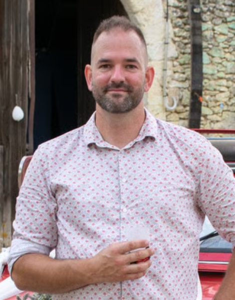

Schrijver
Schrijver
Mijn boeken in het Nederlands
Klik op een boek om zijn wereld te ontdekken.

Nu te lezen
Een moment, of Twee…
16 microverhalen om te lachen, te giechelen, verrast te worden… en soms ook te huilen.
De Nederlandse vertaling is klaar om mee te lezen. Help je mij om hem nog beter te maken?
Lees mee ›Binnenkort
 Binnenkort
Drie Momenten
Binnenkort
Drie Momenten
 Binnenkort
Cette maison…
Binnenkort
Cette maison…
 Binnenkort
De Doodsklok
Binnenkort
De Doodsklok

Roy van Mil
Schrijver & verhalenverteller